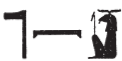
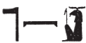
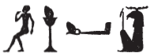

Column 17 (375-384)
Esna 375
- Location: Column 17
- Date: Trajan
-
Hieroglyphic Text
- Bibliography: See entries in Tempeltexte 2.0
Answ.t-bỉty
km-bȝw=f
ʿȝ-pḥty
wr-dndn
mḥr ȝ.t=f
r Sḫm.t m sḫm=s
bȝ-tkk
fdq šȝw
nb ṯȝw
ʿnḫ mwt ẖr s.t-rȝ=f
ẖnmw nb qn nḫt
A The King of Upper and Lower Egypt,
Kematef,479
magnificent of strength,
great of rage,480
whose moment of fury is fiercer
than Sakhmet in her strength.
Attacking Ba-ram,
who tears up the marshes.481
Lord of air,482
life and death are under his control:
Khnum, lord of power and might.
Bnsw.t-bỉty
Mnḥy.t sḥḏ tȝ.wy
ʿn.t-ḥr
mr(.t) ȝb
nb.t wrh
šȝʿ.tw n=s nhm
ḥnw.t ḥz.wt
sḏm(.t) spr(.w)
nb.t tḫ
mr(.t) hrw-nfr
ỉr.tw ḥb n kȝ=s
Nb.t-ww-Mnḥy.t nb(.t) wpy
B The King of Upper and Lower Egypt,
Menhyt, who illumines the two lands,
beautiful of face,
who loves dancing,
Lady of wrh-dancing,
for whom rejoicing was invented;
Mistress of singing,
who hears supplications;
Lady of drunkennes,
who loves hrw-nfr,
for whose Ka one celebrates:
Nebtu-Menhyt, Lady of wpy-festival.483
Esna 377
- Location: Column 17
- Date: Trajan
-
Hieroglyphic Text
- Bibliography: Sauneron 1962, pp. 208-211; see also Tempeltexte 2.0
1ky dwȝ ẖnmw
ḏd-mdw
nṯr nfr
ỉȝw n=k
pȝ nty m 4 ḥr.w
ḥr nḥb.t wʿ.t
qȝ ḫrw
nn mȝȝ.tw=f
wr bȝw
ʿȝ šfy.t
ḥry nḥp
qd r mr=f
ẖnm ỉr ẖnm.w
šȝỉ rnn.t
wḏ ḫp(r)
ṯnỉ kȝ=f
r nṯr.w nṯr.yt
1 Another hymn to Khnum.
Words spoken:
Praise unto you,
o good god,484
he with four heads
upon one neck,
loud of voice,
but who is never seen.
Great of power,
great of prestige,
chief of the potter’s wheel,
who builds as he desires.
Khnum who made the Khnums,
Shai and Renenet,
who decrees what happens,
whose Ka is distinguished
beyond gods and goddesses.
2twt ẖnmw
wʿ wʿ.w
pr ḥḥ.w m kȝ.t=f
rʿ-nb
2 You are Khnum ( ),485
),485
he who is truly singular,
but millions emerge from his work,
every day.
twt ẖnmw
bȝ ỉmn
khȝ ȝ.t
ỉw ḫp(r) pȝ fdw ṯȝw ỉm=f
pr wʿ nb ỉm=sn
m bw mr=f
wʿ m rsy
ky m mḥy
snw m ỉmnty ỉȝbtt
You are Khnum ( ),
),
the hidden Ba (of air),486
fierce of moment;
the four487 winds come about in him,
and each of them comes forth
at the place he desires:
one in the south,
another in the north,
the other two in the west and east.488
3twt ẖnmw
srwḏ ḥtp.w-nṯr.w
n nṯr.w rmṯ.w
m mw.w wr.w
pr(.w) m ḏdw=f
ḏd.tw ẖnmw
m ẖnm ṯȝw ḥnʿ mw
r bʿḥ tȝ m nfrw=f
m rn=f pfy
n Km-ȝ.t=f
m ṯpḥ.t-Nwn(?)
3 You are Khnum ( ),
),
who makes divine offerings grow
for gods and for people,
from the divine waters
which come forth from his spine.489
Thus one says: ‘Khnum’ (ẖnmw)490
when the air joins (ẖnm) the water (mw),
in order to flood the land
with his perfection,491
in this his name of Kematef,
in the grotto of Nun(?).492
twt ẖnmw
kȝ psỉ
sỉwr ḥmw.wt
sgȝ mnḥ.w
r dmḏy.t=sn
You are Khnum ( ),
),
the blazing bull
who makes women pregnant,493
and who diminishes wax (figures)
at their appointed time.
4twt ẖnmw
rdỉ zȝ n dbḥ sw
ḥm.t n nḥỉ sw
sšm ʿ=sn m wȝ.t=kkw
dỉ ṯȝw n ỉwr.t
r sfḫ ȝṯp=s
sʿnḫ ṯȝw ḫnt ẖ.t=s
m rn=f n Ỉmn
ḫnty ḥw.t-nmỉ.t
4 You are Khnum (),
who gives a son to whomever entreats him,
and a wife to whomever beseeches him,
who guides them through the ‘path of darkness’,494
who gives air to the pregnant woman,
to relieve her burden,
and who keeps the fetus alive495 in her womb,
in this his name of ‘Amun’,
foremost of the Mammisi (lit. ‘temple of the bed’).
5twt ẖnmw
ỉr šzp
m wȝ.t-kkw
r sʿnḫ ṯȝw
m-ẖnw swḥ.t
sʿr=k sk ṯȝw
n gȝw-ḥty.t
ʿnḫ.t (ḥr) sṯỉ=sn
m ʿ.t-kkw
5 You are Khnum ( ),
),
who makes light
in the ‘path of darkness’,
to keep alive the chick
within the egg;
moreover you lift up air
to the fetus,496
and the living-eye illumines them,
in the ‘chamber of darkness.’
rmṯ.w ʿ.wt pȝy.w
ḏdf.w mỉt.t ḥnʿ ỉmy.w-mw
6wn=k (ḥr) ʿq pr
ḫnt ẖ.t nb.w
r sʿnḫ qmȝ.n=k m ẖ.t
ḏr tȝ-mrỉ (r)-ḏr=s
(ḥr) nhm n=k
ntk nb=sn m wn-mȝʿ.t
ỉḫt-mn r-ȝw=f
ẖr sḫr.w nw ḥm=k
Humans, livestock, birds,
snakes likewise and those in the water:
6 you enter and exit
within every single body,
to keep alive what you created in the womb.
Since all of Egypt
rejoices for you,
you are truly their lord.
The entire planet
is under your Majesty’s control.
ḥr bȝ=k ȝbḫ.(w)
m ḥʿw=sn
ỉr ḥrỉ tỉ.t=k r=sn
m km [n ȝ.t?]
7ḫpỉ=sn
m km n ȝ.t
nḥp=k r p.t
(ḥr) qdỉ r tȝ
(ḥr) sʿnḫ nḫn.w
m ẖ.t n mw.wt=sn
m r’-ʿ.wy=k
For your Ba is suffused
through their bodies;
if your form would abandon them,
for the completion [of a moment?],
7 they woud perish
in the completion of that moment.
Your potter’s wheel is in heaven,
as you fashion toward the earth,
keeping alive the young
in the womb of their mothers
through your activity.
nn wr r=k
nn ky ḥr-tp=k
r ḫsf ỉr.n=k
m ḏ.t ḏ.t
sʿšȝ ḏȝm.w n pr=k
rʿ-nb
grg.n[=k …]
8m ḥtp
There is nobody greater than you,
nobody else above you,
who might repel what you have made
in the body, ever:
Magnifying generations of your domain,
daily,
after [you] established […]
8 in peace.
pr-hyn pw
n wtṯ nṯr.w
m rn=f n ẖnmw-Ptḥ
qmȝ swḥ.t
pr m [Nwn]
hȝy.t n bȝ=f
s.t-sḫn n ḥm=f
(ḥr) sḥḏ bs=f
(m) spȝ.wt nỉw.wt mỉ Rʿ-nb
It is his pr-hyn,
for he who begat the gods,
in his name of Khnum-Ptah,
who created the egg
which emerged from [Nun].497
It is a kiosk for his Ba,
a place of landing for his Majesty,
while illuminating his statue(s),
in nomes and cities, like every day.
twt ẖnm
kȝ.t=f mn(.tỉ)
grg(.w) spȝ.wt nb.w
m rn[=f]
ḥtp[ hr=k nfr]
n [(pr-ʿȝ ʿnḫ ḏ.t)|]
You are Khnum,
whose works endure,
and all nomes are founded
in [his] name.
May [your beautiful face] be kind
to [the (Pharaoh Living eternally)|!]
Esna 378
- Location: Column 17
- Date: Trajan
-
Hieroglyphic Text
- Bibliography: Sauneron 1962, pp. 212-217; see also Tempeltexte 2.0
9ky dwȝ ẖnmw
ḏd-mdw
twt nb tȝ-sn.t
ḥry nḥp
nḥp nṯr.w
nbỉ ḥnmm.t
ʿ.wt nb mỉ-qd
ʿn-ḥr ẖr šw.ty wr
nfr-ỉrw ḫnty nṯr.w
nfr-ḥr m šfy.t-ḥȝ.t
nn nṯr snỉ sw r qd=f
sr mrỉty
ỉr nty ỉwty
10ms nṯr.w
wtṯ nṯr.wt
9 Another hymn to Khnum.
Words spoken:
You are the Lord of Esna,
Chief of the potter’s wheel,
who models gods,
who fashions the sunfolk,
and literally all animals.
Pleasant of face with double plumes,
good of form, foremost of the gods,
kind of face with ram heads,
there is not god who resembles you.
Truly beloved ram,
who made what is and is not,498
10 who birthed the gods,
and begot the goddesses.
twt nṯr šps
ḫpr ẖr ḥȝ.t
nṯr.t ḥnʿ=f m ḥȝ.t=k
ỉmn nn rḫ.tw qd=f
štȝ nn rḫ.tw sšm=f
pr m Nwn
ḫʿỉ m nbỉ.t
pr Ḥʿpỉ m qr.ty
ẖr ṯb.ty=f(y)
pr ṯȝw nḏm ỉm=f n mḥy.t
r fnḏ n nṯr.w rmṯ.w
You are the august god,
who came about in the beginning,
the goddess-with-him upon your brow.
Hidden, his form cannot be known;
remote, his image cannot be known.
He who emerged from Nun,
who appears with the flame (of a uraeus);
Hapi emerges from the grottoes
beneath his sandals;
the sweet north-wind emerges from him
to the nose of gods and humans.
11twt nsw.t nṯr.w
ḥqȝ m sḫ.t=f
nfr-ḥr wȝḏ-mr.wt
ṯḥn n=f tȝ.wy
m nfrw=f
nb nṯr.w rmṯ.w
nʿš dnỉ.t
ʿȝ nrw
nb šfy.t
rw wr
nb nsr.t
ḫsf ʿȝpp
wnm snf
ḥtp ḥr šʿy.t
ḥbs-ḥr=f
r ms.w bdš.w
ỉr ḫfty.w=f
m ʿḏ.t ʿȝ(.t)
11 You are the King of the gods,
Ruler in his field,
good of face, fresh of love,
for whom the two lands scintillate499
through his goodness.
Lord of gods and humans,
fierce of shouts,
great of fear,
lord of prestige;
great lion,
lord of the flame,
who repels Apophis,
who eats blood,
who delights in massacres,
who covers his face
against the rebel children,
who turns his enemies
into a giant slaughter.
12twt ḫỉ
ḫʿʿ m ḥḏ-tȝ
ỉwn nfr ḥry nṯr.w
ỉȝw rnp
nn mnỉ=f
mn(.w) wȝḥ(.w) ḏ.t
wbn m ỉȝbt.t n p.t
m sḫt-šzp=f
sḥḏ.n=f tȝ.wy
m ȝḫ.ty=f
wnm.t=f m šww
ỉȝbt.t=f m ỉʿḥ
qmȝ.n[=f] tȝ.wy dwȝ.t Nwn
12 You are the child
who appears radiantly500 in the morning,
beautiful pillar, chief of the gods,
old man who rejuvenates,
never perishing,
but remaining and enduring forever.
He who rises in the east of the sky,
as He who Weaves his Light.
He illumined the two lands
with his two, radiant eyes:
his right eye is the sun,
his left eye is the moon,
[he] created the lands, Duat, and Nun.
13twt ṯnn
ṯnỉ r nṯr.w
r’-ʿ.wy=f grg tȝ pn
nḥp m-bȝḥ=f
ʿ.wy=f ḥr qd
ḏbʿ.w=f ḥr wp(.t) ʿ.wt
ṯȝw n ʿnḫ
ʿq m ḥʿw
mȝȝ m ẖ.t n ỉwr.t
ḥmww n ʿnḫ
swnw n snb
nfw dỉ ẖnmw ṯȝw 14r ẖ.t
ms zȝ m-snỉ r ỉt=f
ỉwd ṯȝy r ḥm.t
(m) qd=sn
nn r-ȝw
ỉr.n=f st
nn nṯr ỉr ỉr.n=f
nṯr pn šps
ẖnmw-Rʿ nb tȝ-sn.t
13 You are Tatenen,
most distinguished of the gods,
his activity is populating this land:
the potter’s wheel is before him,
his hands do the modeling,
and his fingers separate limbs.
The breath of life,501
who enters into the body,
and sees inside the pregnant womb;
artisan of life,
doctor of health,
breath who attaches air 14 to the womb,
who births a son resembling his father,
and distinguished men from women
(in) their forms.
All of this entirely:
he made it.
There is no god who could do what he did,
this august god,
Khnum-Re Lord of Esna.
twt ʿḫỉ p.t
Ḥḥ twȝ Nw.t
Šw smsw n Ỉtm
15wʿ pw
ms nty nb.w
qmȝ šww m nṯr.ty=f
r sḥḏ tȝ.wy bȝẖw
bẖ šw.ty
ṯnn nb wrr.t
Nḥb-kȝ.w
nḥb 4 kȝ.w nṯr.w
sȝw n tȝ
ndb.t ḥr gs.wy=f
pr=sn ṯȝw n.t
m-qȝb=f nb
ḥqȝ.n=f ỉfdw
ỉr(.w) ỉr.n=f ʿnḫ
16n qmȝ.n=f nb.w
sḫp(r).n=f ỉḫt nb.w
r ẖr.t=sn
You are he who lifts up the sky,
Heh who supports Nut,
Shu, eldest of Atum,
15 that is the sole one,
who birthed all that is,
who creates light with his divine eyes,
to illumine the two lands.
Radiant of double plumes,
lord of the double-crown,502
Nehebkau (Nḥb-kȝ.w),
who apportions (nḥb) the four divine Kas (kȝ.w).
Beam of the earth (serpent),
the earth rests upon his sides,
they come forth, wind and water,
from all his coils.503
He ruled the four corners,
the maker, who makes life
16 for all he created;
he produced all foods
for their sustenance.
twt nḫy nfr
nn ḥr-ḫw=f
qn pw
ʿȝ nḫt
wr nmt.t
m ḥḥ n ḥp.t
nḫt gb.ty=f
r ḫfty.w=f
ḥwnw nṯry
spd ds
ʿ.wy=f ẖr mʿbȝ
ḥr zmȝ rqy.w=f
17nb mȝʿ.t
ʿnḫ m mȝʿ.t
bwt ḥm=f sȝṯ
ḥr=s r pr=f
rʿ-nb
You are the good champion,
without peer;
that means the mighty,
great of strength,
great of stride
through millions of courses;
he whose shoulders are strong
against his enemies.
The divine youth,
sharp of knige,
with a harpoon in his hands,
slaying his rebels.
17 Lord of Maat,
who lives from Maat;
his Majesty’s abomination is filth,
and it stays away from his temple,
every day.
twt nb ʿbw
mrỉ mȝʿ.t
ẖnmw Ḥʿpỉ wr
sʿnḫ tȝ.wy
ỉr ẖr.t
n qmȝ.n=f nb.w
ʿȝ tp.w-rd.w
m hȝw pȝwty.w
sʿnḫ ỉmy-ẖ.t
m ṯȝw tp-r’=f
18ẖnmw pw ỉr ẖnmw.w 7
qdỉ qdỉ.w
qmȝ nty
ms ỉnm.w nb.w nṯry
Ḥʿpỉ ḥr ḫtm=f
mḥy(.t) ḥr ḏbʿ=f
nn nṯr
twt sw r qd=f
nb nḥp
wʿ wʿ.w
You are the Lord of purity,
who loves Maat;
Khnum504, Hapi the great,
who enlivens the two lands,
and makes sustenance
for all he created.
Great of regulations
in the time of the Primeval ones;
he keeps alive505 those in the womb,
with the breath from his mouth.
He is Khnum, who made the 7 Khnums,
builder of builders,
who created what is,
and birthed all divine colors.
Hapi is on his signet,
and the north-wind is on his seal.
There is no (other) god
who might resemble his form:
Lord of the Potter’s wheel,
truly unique.
19twt mnỉw nfr
qn
nn qn.tw (r)=f
nḫt
nn nḫt.tw (r)=f
wḫr.t=f (ḥr) nbnb ḏm.t=f
n Pr-nṯr
nṯr.w nṯr.yt
m ỉȝw n ḥr=f
ḥtpty.w ḥr dwȝ kȝ=f
nṯr nʿỉ
ỉỉ n ʿš n=f
nhp.n=f mȝr
20m-ʿ ȝd sw
pḥr n=f tpy.w-tȝ
r pr=f ʿȝ šps
m Pr-nṯr
19 You are the good shepherd,
mighty one,
nobody is mightier,
strong one,
nobody is stronger;
whose staff protects his abode506
in Per-netjer.
God and goddesses
make hymns to his face;
the blessed dead worship his Ka;
compassionate god,
who comes to whomever calls to him.
He protected the unfortunate
20 from whomever oppresses them;
those on earth run to him,
to his great, august temple
in Per-netjer.
twt ỉwn ḥry Ỉwn.w
mwnf nfr
wp wȝ.t nfr.t
ỉry-ḥmw m wȝḏ-wr
r swḏȝ ḫdỉ ḫntỉ
nỉs.tw n=f
ỉn z nb
r tm 21ȝq dp=sn
ỉw=f n=sn m ṯȝw ḥr
spr=sn r dmỉ.t
nn tȝ šw m ks
r rd.wy ḥm=f
ḫȝʿ=sn m ỉḫt nb.w nfr
You are the pillar, chief of pillars,
good protector,
who opens a good path.
Oarsman in the Great Green,
to preserve those going north and south;
he is invoked
by every person,
lest 21 their boats sink;
he comes to them as a happy wind,
and they arrive to the port.
There is no land which does not bend
to the feet of his Majesty,
as they set down all good products.
nṯr ḏsr
ỉmn-rn=f
ḫp(r) ẖr ḥȝ.t
ỉr nṯr.w nb
ẖnmw-Rʿ nb tȝ-sn.t
ḥry nḥp
n Psḏ.t
22ḏfn mnḫ
n nṯr.w rmṯ.w
Sacred god,
he whose name is hidden,
who came about in the beginning,
and made all the gods.507
Khnum-Re508 Lord of Esna,
Chief of the potter’s wheel
of the Ennead;
22 beneficent ancestor
of gods and humans.
NB: From this point on, Sauneron 1962, pp. 218-219, n. t, only translated isolated groups of the extremely difficult text. As throughout this hymn and the following (Esna 379), many of the non-divine words are spelled using acrophonic values, sometimes determined with traditional spellings. It is easy enough to recognize the phrase rs=k nfr here, which suggests the following verses actually belong to Esna 379, rather than the preceding hymn where each stanza begins with twt, “You are…”

rs=k nfr
wbn m nbw
ỉtn nfr(?) rȝ-nb
ẖnmw-Rʿ nb tȝ-sn.t
bȝ m Bȝẖw
ʿnḫ(.w) m mȝ.wy(=f)
May you awake509 beautifully,
He who shines as gold,510
beautiful(?) sun disk,511 every day:
Khnum-Re Lord of Esna.
Ba in Bakhu,
from whose radiance one lives.512


rs=k 23nfr
Ḫprỉ m dwȝw
ỉtn m hrw
Ỉtm (m) mšrw
ẖnmw-Rʿ nb tȝ-sn.t
bȝ ỉȝbty
šfy.t-ḥȝ.t
May you awake 23 beautifully,
Khepri in the morning,
solar disk in the day,
Atum in the evening.513
Khnum-Re Lord of Esna,
Eastern Ba,
prestigious of face.
Esna 379
- Location: Column 17
- Date: Trajan
-
Hieroglyphic Text
- Bibliography: None, but see LGG entries listed in Tempeltexte 2.0, which already identified several of these enigmatic epithets.
NB: This hymn migt be a continuation of the “Awakening Hymn” that began at the ‘end’ of the previous text Esna 378, 22-23. Many of the words, not just divine epithets, are spelled using acrophonic values (some tabluated in Sauneron 1982, pp. 192-194), unusual or superfluous determinatives, and perturbed sign order (e.g. ỉtn, sqd). Sauneron 1962, p. 87, refrained from translating this section, noting: “nous ne somme pas parvenu à percer le mystère.”


23rs=k nfr
ʿnḫ r-ȝw=f
sšp tȝ.wy m nfrw=f
ẖnmw-Rʿ nb tȝ-sn.t
ḏȝỉ p.t nỉ wrḏ.n=f
23 May you514 awake well,
he who lives515 in his entirety,
who illumines516 the two lands with his perfection.
Khnum-Re Lord of Esna,
who sails across517 heaven without tiring.518


rs=k nfr
psḏ m hrw
sqd 24m ḥr(.t)
m ỉtn wr
ẖnmw-Rʿ nb tȝ-sn.t
bȝ wr nn wn ỉḏr=f
May you awake well,
he who shines in the day,
and sails519 24 through520 heaven521
as522 the great523 solar disk.
Khnum-Re524 Lord525 of Esna,526
great Ba, he who is infinite.527


Esna 380
- Location: Column 17
- Date: Trajan
-
Hieroglyphic Text
- Bibliography: Sauneron 1962, p. 61; Goyon 1997, p. 95; Abdel-Rahman 2010, pp. 151-153; see also Tempeltexte 2.0.
- Parallels: Esna VI, 520. See the synoptic edition: The Dance for Menhyt-Nebtu
25wrh n Mnḥy.t-Nb.t-ww
ỉn zȝ-Rʿ
(pr-ʿȝ ʿnḫ ḏ.t)|
r’.w n sḥtp ḥm=s
ḏd-mdw
25 Dancing for Menhyt-Nebtu
by the Son of Re,
(Pharaoh living eternally)|
Recitation for pacifying her majesty.
Words spoken:
hrw nfr
nṯr.w m ḥb
rmṯ.w m ršw
ḥr.w-nb.w m hy hnw
mw mȝwy=f 26(r)-tr=f
qȝy.w m qȝb mḥn
wbs ww.w m wȝḏwȝḏ
nb.t sḫ.t
sḫpr(.t) ỉḫt nb.w
rr.n=s pr.w nb.w ỉm=s
bw nb (ḥr) šms-ỉb
nt nb.t ȝḫ.t
ỉdb.w-Ḥr tḫ.tw
m ḥb=s
ỉȝḫ.w nb 27ȝḫȝḫ.w
m wbȝ=s
grg.w ẖ(r) s.t-ḥr=s
A great day!
Gods are in festival,
people rejoice,
everybody makes hy and hnw.
The water renews itself 26 (at) its time,
the high lands are in the coils of Mehen,
the fields blossom with verdure.
The Lady of the Field,
who creates all things,
she nurtured all plants that emerged from her.
All follow their desires,
of the Lady of the Field;
the Banks of Horus are inebriated
in her festival.
All plants 27 are flourishing
in her forecourt,
planted under her supervision.
nfr.wy wrh n kȝ=s
ẖ.t nb.w ʿpr(.w) m nfrw=s
ṯȝy=n n=s mȝḥ n ḥrr.t
pr=n n=s m wpy
ȝb=n n ḥm=s
ỉw=n gȝw=n n=s
28ḫw=s tw r ḫt nb ḏw
n tr.wy
dwȝ s(y) m-m nṯr.yt
ỉr.t-Rʿ pw
wbg.n=s tȝ.wy m ḥr=s
fqȝ=s zȝ-Rʿ
(pr-ʿȝ ʿnḫ ḏ.t)|
mr=s
m ȝḫ.w=s
ḏd.n=s ỉry ỉry
m nḥ.t=f s(y) (r) ȝm=s
qȝ=s ỉmỉ.tw wp.t=f rȝ-nb
How good it is to dance for her Ka!
Every body is equipped with her goodness.
Let us wear crowns of flowers for her;
let us go out in festival for her;
let us dance for her Majesty,
let us cry and sing for her!
28 May she protect you from all evil things
at the two cycles.534
Worship her among goddesses!
She is the Eye of Re,
she brightened the two lands with her face.
May she reward the son of Re,
(Pharaoh living eternally)|,
whom she loves,
with her benefactions.
May she say to him ‘Yes! Yes!’535
when he asks her consent to grab her,
so she is high upon his forehead, every day.
Esna 381
- Location: Column 17
- Date: Trajan
- Hieroglyphic Text
- Bibliography: see LGG references in Tempeltexte 2.0
Formula
1m.k zmȝ
spt=ỉ m-bȝḥ=k
ḫfty qs.tw
mʿbȝ=ỉ
ḫʿỉ=k r=sn
m ḫprw=k štȝ
sḫm kȝ=k ỉm=sn
ḥnʿ zȝ=k
1 Behold, the sacrificial bull,
whom I slaughter before you.
The rebel is tied up,
which I harpoon.
May you appear against them
in your mysterious form;
may your Ka have power over them,
along with your son.
The King
2nsw.t-bỉty
nb tȝ.wy
(ȝwtwkrdwr kysrs)|
3zȝ Rʿ
nb ḫʿ.w
(tryns nty-ḫwỉ)|
4pḥty-ỉb mỉ ẖnmw nḫt
ḥzȝ-ḥr m sbỉ n ỉt=f
5nṯr nfr
šzp-ʿnḫ n ẖry-ḫ.t
ḥry-srḫ n nb pḥty
ḫrp ỉb[…]
2 The King of Upper and Lower Egypt,
Lord of the Two Lands,
(Autokrator Caesar)|
3 Son of Re,
Lord of Appearances,
(Trajan Augustus)|
4 Mighty of heart like Khnum the strong,
fierce against the rebel of his father.
5 The good god,
living image of Club Bearer,
successor of the Lord of Strength,
who guides the heart[…]
Khnum-Re Lord of Esna
6[ḏd-mdw n] ẖnmw-Rʿ nb tȝ-sn.t
nṯr ʿȝ nb sḫ.t
Ptḥ qmȝ swḥ(.t)
pr m 7[Nwn…]
[…]=f
zmȝ sʿnḫ ẖr s.t-r’=f
qmȝ wnn.t
8[…]
Šw wr
ḥwỉ ḫfty
9dỉ=ỉ n=k ḥzȝ
r sḫr ḫfty.w=k
[…] mʿbȝ=ỉ
6 [Words spoken] by Khnum-Re Lord of Esna,
Great God, Lord of the Field,
Ptah who created the egg
which came forth from 7 [Nun…]
[…] his […]
killing and enlivening are under his control.
He who created what exists
8 […]
Shu the great,
who slays the enemy.
9 I give you ferocity
to fell your enemies
[…] my harpoon.
Menehwy
10ḏd-mdw n Mnḥwy
ʿšȝ dm
nṯr ʿȝ nb ḥw.t-snfrw
mnhz ḥry-ỉb 11ḥw.t-bȝw
qdfty(?) n sḫm.t
Ỉmn-Rʿ m ỉrw=f
Ḥr-ỉmnty m ḫprw=f
ỉry-pʿ.t nṯr.w
sḫpr ẖr.t 12n ỉt=f
zȝ Ỉs.t
ḫʿ.tw ḥr ḫ.t n nsw.t
ʿnḫ-mwt ẖr s.t-ḥr=f
13dỉ=ỉ hȝỉ bdš.w=k
r ḫb.t
???
10 Words spoken by Menehwy,
numerous of knives,
great god, lord of Hut-Sneferu,
Menqeb within 11 Temple of the Bas,
avenging demon(?)536 of Sakhmet.
Amun-Re in his visible form,
Horus the Westerner in his manifestation,
Governor of the gods,
who creates sustenance 12 for his father.
Son of Isis,
appearing on the throne of the King,
life and death are under his authority.
13 I cause your rebels to descend
to the slaughtering block
???.537
Behind the Divinities
14nsw.t bỉty
qn ʿḏ ksm=f
pr nn ʿḥȝ m hȝw=f
ḥzȝ rȝ-ḥzȝ
ỉṯ m sḫm=f
ʿȝ pḥty
zmȝ ẖȝk.w-ỉb=w
sbỉ=f nb n tp[…]
[…] ḫrwy.w=f
ỉr šʿ.t
n šš zȝṯw=f
[…]=f
ẖnmw wr […]
14 The King of Upper and Lower Egypt,
mighty one who massacres his enemy,
valiant one, nobody can stand in his area,
fierce, wild crocodile,
who seizes with his power;
great of strength,
who slays the disaffected ones,
all of his rebels are cut[…]
[…] his dissenters,
who makes a slaughter
for whomever violates his ground,
[…] his […]
Khnum, great […]
Esna 382
- Location: Column 17
- Date: Trajan
- Hieroglyphic Text
- Bibliography: Sauneron 1962, p. 62 (excerpt); Abdel-Rahman 2010, pp. 154-157; see also Tempeltexte 2.0
Formula
1[…] wrh=t nfr[.t …]
[…].wy 2jbȝ
wn m bȝḥ=t
m tp-dwȝw
r mȝȝ nfrw ỉtn snw
ỉỉ.n=ỉ ḫr=t
tfnn ỉb=ỉ ḥr wrh
1 […] your dance,538 Beautiful one […]
how […] 2 is the dancer
who is before you
at the top of the morning,
to see the beauty of the second sundisk.
I have come before you,
and my539 heart rejoices while dancing.
The King
3nsw.t-bỉty
nb-tȝ.wy
(ȝwtwgrdwr kysrs)|
4zȝ-Rʿ nb ḫʿ.w
(tryns nty-ḫwỉ)|
5snn ʿnḫ n Šw m Ỉwny.t
w(r)h ỉbȝ n Mnḥy.t-Nb.t-ww
6nb ỉbȝ
sḥtp ḥnw.t=f
m mr=s
7nṯr nfr
ỉbȝ n wpy n Mnḥy.t-Nb.tww
wr[ḥ…]
[…] wʿb.n=f s[…]
3 King of Upper and Lower Egypt,
Lord of the Two Lands
(Autokrator Caesar)|
4 Son of Re, Lord of Appearances
(Trajan Augustus)|
5 Living image of Shu in Iunyt,
who dances and leaps for Menhyt-Nebtu.
6 Lord of the dance,
who appeases his mistress
with what she loves.
7 The good god,
who dances for the festival of Menhyt-Nebtu,
who danc[es…]
[…] having purified […]
Menhyt
8ḏd-mdw n Mnḥy.t wr.t
nb.t ḫnt-tȝ
Nb.t-ww 9nb(.t) tȝ-[s]n.t
tmȝ.t ḥr.t-tp
ḫp(r.t) m ḥȝ.t
10šps.t ʿȝ.t
mr.t Ptḥ
sn.t(?) ʿn.t
ẖnm(.t) ḥnʿ 11sn=s ẖnmw
Tfn.t wr.t
wrh n=s Šw
m 12ḥb=s nfr
n ʿq r sḫ.t
nb(.t) wpy
13ḥnw.t ỉbȝ
msḫȝ kȝ=s ḫbỉ
8 Words spoken by Menhyt the great,
Lady of Khent-ta;
Nebtu 9 Lady of E[s]na,
the mother and uraeus,
who came about in the beginning,
10 the great August one,
beloved of Ptah,
pleasant sister(?),
who joins with 11 her brother Khnum;
Tefnut the great,
for whom Shu dances
in 12 her beautiful festival
of entering the field.540
Lady of wpy-festival,
13 mistress of dancing:
the delight of her Ka is dancing.
Nebtu
14ḏd-mdw n Nb.t-ww
nb.t tȝ-sn.t
Mnḥy.t wr.t
nb.t ḫn.t-tȝ
15wḏȝ.t ỉb=s m ḥʿʿ
nb(.t) wrh
wrh n=s sn=s
16ʿȝ […] m pr-ẖnmw
nb(.t) ỉbȝ
mr(.t) hrw-nfr
š[ȝʿ.tw] wpy n ḥm=s
14 Words spoken by Nebtu,
Lady of Esna,
Menhyt the great,
Lady of Khent-ta,
15 The wedjat-eye, whose heart rejoices,
Lady of dancing,
whose brother dances for her,
16 Great of […] in Per-Khnum,
Lady of the dance,
who loves holidays,
for whose Majesty festival was in[vented].541
Behind the Goddesses
17nsw.t-bỉty
Wps.t wr.t
ʿn.t-ḥr
nb.t ỉhȝy
ỉr.tw smsm
ʿb.tw ḥr=s ỉn nṯr.w nṯry.t
p.t ḥr nhm
tȝ m mfkȝ.t
ḏr dgȝ.tw ḥm=s
ḥr pẖr=s sḫ.t
dỉ sn=s ʿ=f r ʿ=s
ỉr=f n=s wrh m ršw
spr=s nỉw.t=s m ḥb
mȝȝ=s nfrw wpy
Mnḥy.t-Nb.t-ww
17 The King of Upper and Lower Egypt,
Wepset the great,
pleasant of face,
Lady of rejoicing,
for whom the gods and godddesses make praises
and perform dances.
Heaven rejoices,
the earth is turquoise with joy,
since one has beheld her Majesty
going around the Field.542
Her brother (Khnum) gives his hand to hers,543
he performs the dance for her joyfully,
she reaches her city in festival,
so she might see the beauty of the wpy-festival:
Menhyt-Nebtu.544
Esna 383
- Location: Column 17
- Date: Trajan
- Hieroglyphic Text
- Bibliography: See Tempeltexte 2.0
Aẖnmw-Rʿ nb tȝ-sn.t
nṯr ʿȝ nb sḫ.t
mwnf n nṯr.w nṯry.t
ʿȝ pḥty
gbgb ky.w
A Khnum-Re Lord of Esna,
Great god, Lord of the Field.
Protector of gods and goddesses,
great of strength,
who crushes the rebels.
Bnṯr nfr
ỉwʿʿ n ẖnmw
ʿȝ nḫt
ỉr ḫfty n ỉt=f
m tm-wn
nb wsr
(tryns nty-ḫwỉ)|
[…]
B The good god,
heir of Khnum,545
great of strength,
who makes the enemy of his father
non-existent.
Lord of might,
(Domitian Augustus)|
[…]
Cnṯr nfr
wrh n ḥnw.t=f
r qȝw n p.t
nb-ḫʿ.w
(ȝwtw[krtwr])|
[…]
C The good god,
who dances for his Mistress
to the height of heaven.
Lord of Appearances,
(Auto[krator])|
[…]
DNb.t-ww nb(.t) tȝ-sn.t
Mnḥy.t wr.t nb(.t) ḫnt-tȝ
nb(.t) ỉhȝy
ʿšȝ ḥb.w
šȝʿ.tw wrh n ḥm=s
D Nebtu Lady of Esna,
Menhyt the great, Lady of Khent-ta,
Lady of rejoicing,
numerous of festivals,
for whose Majesty dancing was invented.
Esna 384
- Location: Column 17, base
- Date: Trajan
-
Hieroglyphic Text
- Bibliography: None.
Minor inscriptions. Cartouches of Trajan, name of Heka.